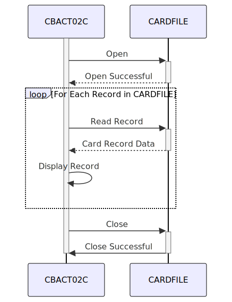

Gerado em: 1 de outubro de 2024
Título do Documento: Aplicação CardDemo - Especificação do Processador de Lotes de Arquivos de Dados de Cartão
Descrição Resumida:
Este programa COBOL processa sequencialmente dados de cartão de crédito de um arquivo VSAM KSDS chamado CARDFILE. Ele lê cada registro, exibe o conteúdo e implementa tratamento de erros para operações de acesso a arquivos. O programa garante a integridade dos dados abrindo e fechando o arquivo corretamente.
Histórias do Usuário:
Como um sistema de processamento em lote, preciso ser capaz de ler e exibir o conteúdo do arquivo de dados do cartão de crédito para que as informações possam ser usadas para processamento ou relatórios adicionais.
Epic Relacionado: 7 - Processamento em Lote
Requisitos Técnicos:
- Manipulação de Arquivos:
- O programa lê dados de um arquivo VSAM KSDS chamado
CARDFILE.
- O arquivo é acessado sequencialmente.
- A chave de registro é
FD-CARD-NUM.
- O status do arquivo é armazenado na variável
CARDFILE-STATUS.
- Leitura de Dados:
- O programa lê cada registro do arquivo na estrutura de dados
CARD-RECORD.
- Exibição de Dados:
- O conteúdo de cada registro lido é exibido.
- O destino de saída (tela ou impressora) não é especificado no código fornecido.
- Tratamento de Erros:
- O programa verifica o status do arquivo após cada operação de E/S.
- Se ocorrer um erro, uma mensagem descritiva será exibida e o programa poderá terminar de forma anormal.
- Fechamento do Arquivo:
- O programa fecha o arquivo após processar todos os registros ou se ocorrer um erro.
Modelos Relacionados
CARD-RECORD: Representa um registro de cartão de crédito.
FD-CARD-NUM: Número do cartão de crédito (PIC X(16)).FD-CARD-DATA: Dados restantes do cartão de crédito (PIC X(134)).
Configurações:
CARDFILE: Arquivo VSAM KSDS contendo dados do cartão de crédito.
ORGANIZATION: INDEXEDACCESS MODE: SEQUENTIALRECORD KEY: FD-CARD-NUM
- O destino de saída para os dados do cartão exibidos não está configurado no código fornecido. Presume-se que seja um console do sistema ou um dispositivo de saída predefinido. Considere adicionar uma opção de configuração para direcionar a saída para um arquivo ou dispositivo específico.
Melhorias de Código:
- Configuração de Destino de Saída: Permitir que o programa seja configurado para gravar a saída em um arquivo ou dispositivo específico em vez de depender de um destino de saída fixo.
- Tratamento de Erros Aprimorado: Fornecer mensagens de erro mais específicas com base nos códigos de status do arquivo para ajudar na depuração e solução de problemas. Considere o uso de um mecanismo de log para registrar erros e outras informações relevantes.
- Modularização: Divida o programa em parágrafos ou subprogramas menores e mais gerenciáveis para melhor organização e legibilidade do código.
- Documentação: Adicione comentários para explicar o propósito de cada seção do código e a lógica por trás das rotinas de tratamento de erros.
- Otimização de Desempenho: Embora não seja uma preocupação importante para este programa específico, considere o uso de técnicas de manipulação de arquivos mais eficientes se o desempenho se tornar um problema com conjuntos de dados maiores.
Melhorias de Segurança:
- Controle de Acesso a Arquivos: Implemente controles de acesso adequados para restringir o acesso não autorizado aos dados
CARDFILE.
- Criptografia de Dados: Considere criptografar dados confidenciais do cartão de crédito em repouso e em trânsito para protegê-los de acesso não autorizado.
- Log de Auditoria: Implemente o log de auditoria para rastrear todas as operações de acesso a arquivos e exibição de dados para fins de segurança e conformidade.
Diagrama Conceitual:

–Made by “Smart Engineering” (by Compass.UOL)–